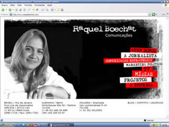
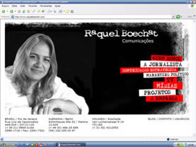

Novo Site e Boletins / www.raquelboechat.com

. |
Novo Site e Boletins / www.raquelboechat.com |
|||||

|
|
||||
O SITE O endereço www.raquelboechat.com entrou no ar em 2003, mas ganhou forma e conteúdo em novembro de 2005, com a sua primeira versão. Resultado de muito trabalho e pesquisa, vem de lá, do começo, a decisão - e a sorte! - de fazer deste espaço virtual, dentre os tantos bilhões e bilhões que existem na rede, uma cria que conta com a colaboração de profissionais de alto nível técnico, e de várias tribos. Fazem parte deste processo, velhos e novos parceiros de Raquel Boechat, entre eles a designer Monica Solti, o diretor Tomil Gonçalves, o músico Marcos Nimrichter, o técnico de som Marco Aurélio Oliveira, além dos estagiários Mariana Abrantes e Leo Torres, da sócia Annamaria Macedo, do fotógrafo Guarim de Lorena, para citar apenas alguns entre os outros tantos amigos, advogados, jornalistas, apresentadores, produtores, diretores, técnicos em programação e em informática, tradutores..., uma turma de primeira, que ao longo de todos estes meses vêm contribuindo com o seu conhecimento, trabalho, talento e sensibilidade para que em 2007 possamos apresentar um site feito com arte e cuidado, em cada detalhe, na sua mais completa e madura versão desde a criação do projeto original. A MEMÓRIA AUDIOVISUAL Já são quase 2 anos de uma incansável busca Este trabalho de reconstituição não chegou nem na metade, e pretende não só registrar o portfolio da diretora e jornalista, ou da sua Empresa - dentre os trabalhos mais recentes, mas resgatar peças, documentar tendências, o uso dos recursos técnicos, as linguagens estéticas, uma homenagem ao trabalho, a uma geração, amigos e colegas. OS BOLETINS Em setembro de 2006 saiu o 1º boletim emitido para mais de 2 mil endereços de e-mail, a maioria deles, contatos vindos do convívio profissional da jornalista. De lá pra cá, esta é a 4ª edição. O espaço pretende, com o correr do tempo, ser mais que um canal de informação institucional da Empresa, mas um espaço para a crônica, o entretenimento e a memória de sets, redações, viagens e histórias.
|
||